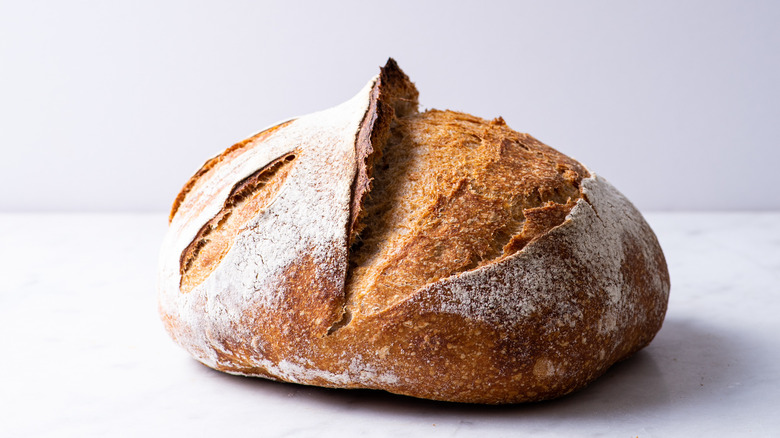

Bread Recipe

Description
in this guide we will show you how to bake this incredible tasty and easy to do rustic style bread
we aim for a easy way to make bread, with rudimentary ingredients.Try to do it more than once, you will learn new tecniques each time you try this recipe
Ingredients
- 550g 000 flour
- 4g instant yeast
- 330g warm water
- 12g salt
- 50g whole wheat flour
Steps
- first, in a bowl, put 100g of 000 flour and 100g of warm water, you may want to put the water 30 seconds into the microwave, and 1g of instant yeas, mixed it up and leave it 4 to 24 hours on the counter
- pour 230g of water in the bowl, mixed it a little bit, pour 450g of 000 flour, 12 g of salt, 3 g of instant yeast and 50g of whole wheat flour and combine all the ingredients together
- cover the dough for 30 minutes
- every 30 minutes, you will take each corner of the dough, strech it as far as you can, and take it into the other corner of the dough, you want to do this with each corner of the dough
- repeat this proces for 4 hours
- pre heat your dutch oven at 250° celcius
- put some corn flour on the floor of the dutch oven and pour the dough inside, carefully
- bake for 20 minutes, then, remove the lid and bake for other 24 minutes
- let the bread cool for 1 hour
- enjoy!